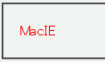

2002-11-06修正。
スタイルシート内で1バイト文字のバックスラッシュ（\）を用いると、その直後にある文字を無視する。このため、後に続くスタイル宣言が無視されてしまうことがある。
スタイルシート内の指定（一部）：
/* コメントA \*/
p#a {
color: red;
}
/* コメントB */
HTML文書内の記述：
<p id="a">MacIE</p>
MacIE
コメントAの終端（*/）の直前にバックスラッシュを置いています。本来はid属性が 'a' のp要素の前景色が赤色になるはずです。
WinIE6.0での表示（標準モード）
例示では、バックスラッシュの直後にある「*」が無視され（その結果、コメント終端として認識されない）、次のコメント終端までをコメントとして扱ってしまうために、間にあるスタイル宣言が反映されません。これを利用することで、MacIEに特定のスタイルを適用させないようにすることもできるようです。
スタイルシートをシフトJISコードで記述している場合、第2バイトがバックスラッシュと同じ（0x5C）になっている文字が存在するため、バックスラッシュを記述していないのにバグが発生することがあります。以下の文字などが該当しますので注意してください。
MacIE5で不具合が発生する模様。